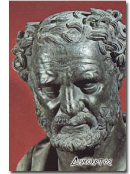

Eight Epicurean Counsels
Epicureanism was never meant to be a dry academic philosophy but a vital way of
living which would free men and women from a life of unhappiness, fear and anxiety.
Epicureanism is a missionary philosophy, and while epicureans have written scholarly
works, they have always been very interested in explaining this way of life in a manner
simple enough for anyone to understand and remember.
The following eight counsels are a basic guide to
Epicurean living.
1) Don't fear God.
2) Don't worry about death.
3) Don't fear pain.
4) Live simply.
5) Pursue pleasure wisely.
6) Make friends and be a good friend.
7) Be honest in your business and private life.
8) Avoid fame and political ambition. |
Ten Basic Epicurean Values
Epicureanism is a deeply ethical and rational way of life which was immensely
popular for almost five hundred years (approximately 300 B.C. to 200 A.D.). Based upon a
thoroughly scientific understanding of the universe, it teaches that the way to happiness
is simple and available to everyone. Here are some of its most cherished
values)
1-5 have to do with ourselves)
1) Prudence
2) Self-management
3) Self-sufficiency
4) Serenity
5) Simplicity 6-10 have to do with our relationship with
others)
6) Friendliness
7) Honesty
8) Generosity
9) Cheerfulness
10) Gentleness |
The following is a rendition of the first twenty-five Principal Doctrines of Epicurus into
understandable, contemporary English. More than half a dozen translations were consulted
during the writing of these paraphrases.
THE PRINCIPAL DOCTRINES OF EPICURUS
1) If God is perfect, He is always at peace and cannot become angry or upset at anyone
or anything because only an imperfect being can be disturbed in these ways. Likewise, if
God is perfect, He doesn’t need or want anything from anyone since if He did need or
want anything, He would not be God but an unhappy and imperfect being.
2) Death is nothing to us; once the body and brain decompose into dust and ashes, there is
no feeling or thought, and what has no feeling or thought is nothing to us.
3) This is the height of pleasure: to be free of all pain and discomfort in both the body
and the mind. When this pleasure is present, all pain, of both body and mind, is absent.
4) Illnesses which cause excruciating pain last only a short time and then you are free.
Illnesses which cause mild pain may last long but it is possible to live in such a way
that the pleasures of life far outweigh the discomforts. Either way, pain is nothing to
fear.
5) It is impossible to be happy without also being wise, honorable and honest, and it is
impossible to be wise, honorable and honest without also being happy. Happiness is so
dependent upon the practice of wisdom, honor and honesty that being negligent in just one
of these will lead to nothing but trouble and sorrow in life.
6) Absolutely anything which will keep you from being harmed by people is good and right.
7) Some men and women want to be famous and well-known because they think that this
will make their lives safe and secure. If fame brings safety and security, it is good and
right to want to be famous; but if a famous life brings more trouble than an obscure life,
it is foolish to want what is actually bad for us.
8) There is no such thing as a pleasure that is bad in and of itself. What is bad are the
unpleasant consequences that can result if you do not use your head when deciding on which
pleasures to pursue and which to avoid.
9) If every pleasure lasted and affected the entire body and not just one or two parts,
there would be no difference between one pleasure or another; they would all be equally
desirable.
10) If the things which bring pleasure to licentious men and women freed them from
troubled minds, that is, if such a life freed them from the fear of God, the fear of death
and the fear of pain, and if those things further taught them how to rationally manage
their desires, we would find no wrong with these men and women; they would have reached
the height of pleasure and would be free of all bodily and mental pain, which is the
beginning and the end of all evil.
11) If our peace of mind were not disturbed by superstitious ideas about comets, falling
stars and other types of astronomical phenomenon, or by the thought of death (which is
really nothing to us), and also by our lack of understanding of the limits of pain and how
to rationally manage our desires, we wouldn’t have any need to acquire a thoroughly
scientific understanding of nature.
12) An individual cannot be free from the most disturbing fears about the universe as
long as he lacks a thoroughly scientific understanding of nature and instead believes in
legends, parables and myths. So without a thoroughly scientific understanding of nature,
one cannot reach the height of pleasure.
13) There is no point in working hard to achieve physical safety and security from those
who can harm you if your peace of mind can be easily attacked and destroyed by fears and
anxieties that result from an unscientific understanding of why nature works as it does in
the sky, in the earth, or anywhere else in the universe.
14) While some safety and security from others might possibly be obtained if you were to
amass great wealth and power, safety, security and tranquility would more certainly be
yours if you simply lived a quiet and simple life withdrawn from the world.
15) Understand that true wealth is having what you really need for a happy life and you
will find out how easy it is to be completely satisfied; mistakenly believe that wealth
consists in possessing all that one could possibly imagine and dream up and there will
never be an end to your toil and sweat.
16) By continuously managing the most important matters of life according to the dictates
of reason, the wise man or woman constructs a lifelong defense against misfortunes and
troubles and seldom suffers from them.
17) The honest individual has more peace of mind than anyone; it’s the dishonest man
or woman who always has some reason to worry and feel anxious.
18) As soon as the height of physical pleasure has been reached by the satisfaction of
bodily craving, there is no greater pleasure beyond that to be enjoyed; one has reached a
plateau that cannot be surmounted. At that point, one can vary the type of pleasure; one
cannot increase the intensity. Mental pleasure also has a natural limit which cannot be
surpassed and it is this) the peace of mind that results from the rational understanding
and pursuit of pleasure and a thoroughly scientific understanding of those things which
used to fill the mind with fear and trembling.
19) An immortal life would not provide an opportunity for any more pleasure than this
mortal life does. A rational understanding of happiness makes clear the fact that the
height of pleasure is attainable here and now, in this life, and it cannot be surpassed,
even if one could live forever.
20) If there were no natural limit to pleasure, it would take an eternity to satisfy the
infinite number of desires and wants that one could imagine and dream up. The mind,
however, is able to discover the natural limit and height of pleasure; it is also capable
of freeing us from all fears of any life after death so that we do not need, want nor fear
eternity. Therefore, even if the time has come for us to depart from life, we can approach
our final rest with the absolute confidence that we have enjoyed all of the pleasure that
it was possible to enjoy.
21) The individual who learns what the natural limits of pleasure are knows how very
little is actually required to satisfy his or her needs and have a happy life and how easy
it is to obtain it. Therefore, it is unnecessary to spend one’s life struggling and
slaving away.
22) In all decision making, the criterion should be the ultimate goal of life which we
have set before us and the no-nonsense facts of what we actually know and experience (rather
than what others wildly imagine) if you stray from this rule, you will be overwhelmed
with doubt and confusion.
23) If you deny or dismiss all of the
no-nonsense facts of what we actually know and
experience, there will be nothing left to serve as a criterion for judging anything, even
those views which you state must be false.
24) Absolute confidence in determining what is true and what is delusional is only
possible if you learn to clearly distinguish between those ideas which are based upon the
no-nonsense facts of what we actually know and experience and those ideas which have
their origin in the imagination and nothing more. In other words, if you give the same
authority to the imagination and your inner feelings that you give to the
no-nonsense
facts of what we actually know and experience, you will never be completely sure about
anything, as there will no longer be any criterion left to remove your doubt and
confusion.
25) If you do not keep the ultimate goal clearly in mind whenever you must decide
whether to pursue or avoid a particular pleasure or pain, but decide according to some
less well thought out criterion, your behavior will not be consistent with your
principles.
ETHICAL MAXIMS OF DEMOCRITUS AND DIOGENES
Democritus was the head of the Atomist school of philosophy. He was highly regarded
by both Epicurus and Lucretius. Many of his ideas were further developed by Epicurus.
Diogenes of Oenoanda lived in the third century AD and erected a unique monument to
Epicurean philosophy) he had the basic teachings of Epicurus engraved in stone. Only a
very few fragments have survived from this monument.
The following are my paraphrases of some of their ethical maxims which might be of
particular interest to those exploring Epicureanism. I am always interested in
popularizing Epicureanism so the paraphrases here are free and idiomatic rather than
strictly to the letter.
~
DEMOCRITUS
1) Our inclinations to vice are strengthened in the company of evil companions and
weakened in the company of good men.
2) Be grateful and content for what you have and do not dwell on things which you do
not have. Do this and a mind troubled by envy will be far from you.
3) If you consider the lives of those who are worse off than you, you will realize that
the little which you have is very much in the eyes of the many and that your
dissatisfaction is unwarranted. Hold to this truth and you will drive jealousy and envy
far from your heart.
4) Some men rule nations while being enslaved by their desires for the flesh.
5) Don’t waste your breath offering advice to those who think that they know
everything already.
6) A greedy heart is a heavier burden to bear than poverty, for it is never satisfied
and is always desiring more.
7) Anything acquired through dishonesty leads to a loss of character.
8) People sometimes rationalize their greed by saying that it is all for the good of
their children but this is nothing but an excuse they use to make their despicable actions
appear respectable and praiseworthy.
9) Whatever we really need to live happily can be found without too much struggle; it
is the things which we are brainwashed into believing that we need which cause us trouble.
10) It is better to speak the truth simply than to be long-winded.
11) Your time is better spent correcting your own follies than in studying your
neighbors’.
12) Tact is welcome on all occasions; frankness on few.
13) Simple living and a plain diet are good but so is an occasional break from the
day-to-day routine. Wise people know how to be flexible and when.
14) A life without parties and celebrations is like a long journey without rest stops.
15. The wise man doesn’t complain about what he does not have but finds pleasure
and contentment in what he does have.
16) Beyond a certain point, most pleasures bring pain. There is a natural limit to
pleasure. Beyond that limit, you have "too much of a good thing".
17) Men and women pray to god for health when much of the power to achieve and maintain
their physical well-being lies within themselves, in the wise management of their desires
which, when allowed to run unchecked, become their ruin.
18) Men and women who constantly exceed the natural limits of food, drink, and sex
eventually discover that the pleasures derived from them are few and short-lived while the
pains that result from excess are many and can haunt them for a lifetime.
19) If your character is stable and orderly, your life will be also.
20) When you envy someone, you cause yourself unnecessary disturbance and become an
enemy of your own peace of mind.
21. Having children brings much trouble and numerous responsibilities, and no matter
how much care you give your children there is never any guarantee that they will not bring
you great pain and heartbreak.
22) Don’t have children; they bring much trouble, toil, and sorrow. What few
advantages there are to having children rarely outweigh the disadvantages.
23) Men and women are like other living creatures: they bring children into the world
with little or no thought about the matter and then they suffer and toil as best as they
can to rear them. Men and women think that it is necessary to have children. It is not. It
is their animal nature and social custom, rather than reason, which makes them believe
that this is a necessity.
24) If you keep your desires within the natural limits set by nature, poverty will seem
like great wealth to you.
25) The wise man is happy with a modest lifestyle; the fool is miserable even with
luxuries.
26) These rules you must follow if you are to be happy: Do not let yourself get too
busy. Know your limits and do not attempt what is beyond them.
27) Be ready to suffer and forgive the wrongs done to you.
28) The hopes of the wise are attainable; the daydreams of fools impossible.
29) All old men were once young, but not all young men will safely reach old age.
30) People who do not understand that death is nothing waste their lives in fear
because of the many superstitions about life after death.
31) Fools do not listen to wisdom but only learn when they suffer the painful
consequences of their actions.
32) Examining your plans before you act is much better than repenting of them after.
33) Friendship with one wise man is better than friendship with a hundred fools.
34) Physical beauty without wisdom is worthless.
35) People are widely celebrated for all types of foolishness; how much better to be
honored for even a tiny bit of wisdom.
36) Always think on what is good and pleasant and you will have the mind of a god.
~
DIOGENES OF OINOANDA
1) Extravagant wealth is of no more benefit to men and women than water is to an
already full glass. Both are useless and unnecessary.
2) We can achieve great satisfaction when we look upon the wealth and vast possessions
of others by remembering that we are not troubled by those desires nor are we a slave to
the labors and duties necessary to fulfill such wants.
3) These are the root of all evil: fear of god, of death, of pain, and desire which
goes beyond what nature requires for a happy life.
4) Nothing contributes more to serenity than a simple lifestyle that is not too busy,
that does not demand that we engage in disagreeable tasks, and that does not require us to
push ourselves beyond our power and strength.

|